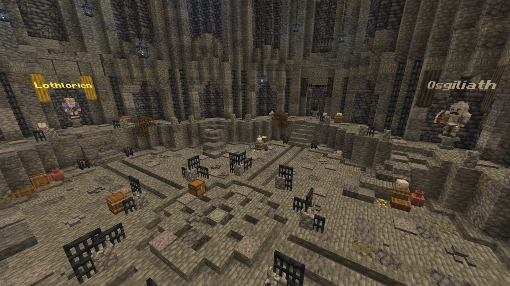
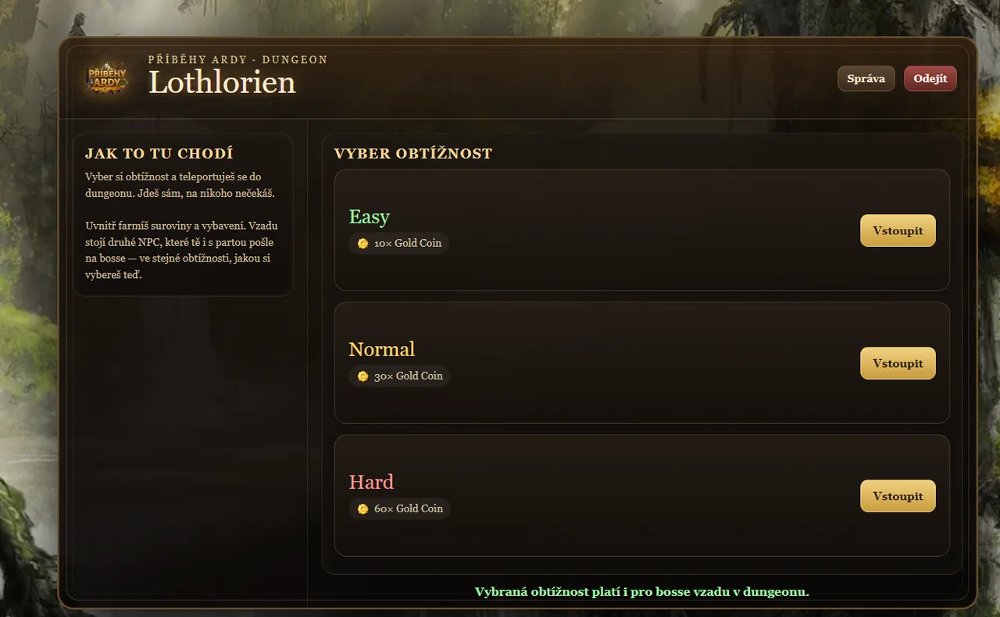
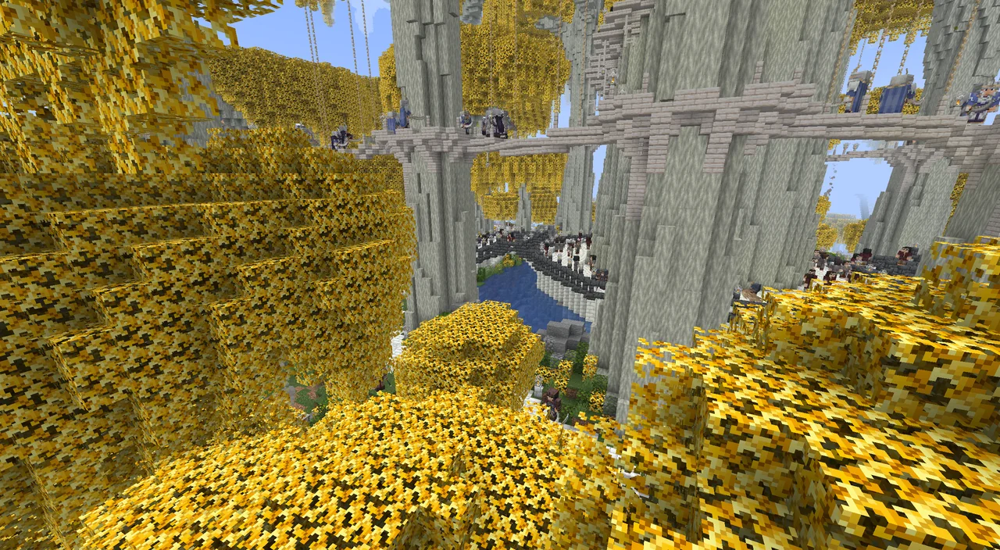
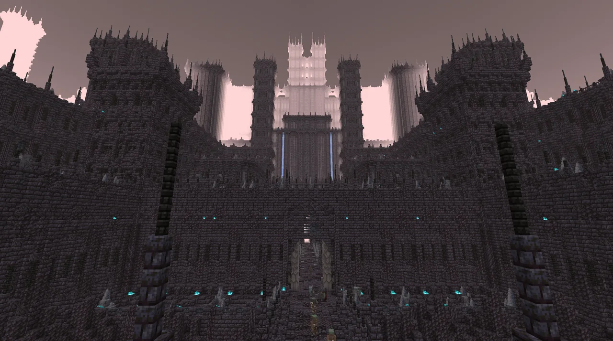

¶Dungeony
iVe Středozemi existují dva druhy dungeonů podle toho, jestli bojuješ za dobro, nebo za zlo. Sám se do něj vydáš, farmíš suroviny a vybavení, a pak se s partou vypravíš na bosse.
![OVĚŘIT] Seznam dungeonů, ceny vstupu a umístění NPC se na ostrém serveru ještě ověřují.
¶Kde dungeony najdeš
Všechny dungeony začínají v lobby dungeonů. Dostaneš se tam přes warp Dungeons („Vstup ke všem různým dungeonům a bossům celé Středozemě“).

V lobby stojí vstupní NPC pro jednotlivé dungeony (na fotce Lothlórien, Utumno a Osgiliath). Jedno NPC znamená jeden dungeon.
¶Vstup a obtížnost
Klikni na vstupní NPC a otevře se menu.

- Zvol obtížnost Easy, Normal nebo Hard a potvrď Vstoupit.
- Vstup se platí mincemi Gold Coin. Cenu určuje správce serveru pro každou obtížnost zvlášť (na fotce 10×, 30× a 60×).
- Do dungeonu jdeš sám, na nikoho nečekáš. Uvnitř farmíš suroviny a vybavení.
- Zvolená obtížnost se ti pamatuje 6 hodin, i po smrti nebo odpojení.
![OVĚŘIT] Skutečné ceny vstupu (10, 30 a 60 Gold Coin je jen nastavení u jednoho NPC).
¶Boj s bossem
Vzadu v dungeonu stojí druhé NPC, které tě i s partou pošle na bosse ve stejné obtížnosti, jakou jsi zvolil na začátku.
- Výpravu tvoří 2 až 10 hráčů. Vůdce výpravy vybírá bosse a vyráží, ostatní se přidají tlačítkem Připojit se.
- Po teleportu se aréna zamkne na 30 minut.
- Na bosse potřebuješ Boss klíč, který získáš jako drop z běžných NPC v dungeonu.
- Z bossů padají Weapon Shardy, Gold Coiny a Silver Coiny.
iVzhledem k vysoké náročnosti doporučujeme chodit do dungeonů v partě 5 a více hráčů.
iPřed výpravou si vyzvedni dostupné questy u NPC přímo na spawnu daného dungeonu.
¶Pravidla
- Hráči dobra nesmí do dungeonů dobrých frakcí a hráči zla do dungeonů zlých frakcí (například Gondor nesmí bojovat v dungeonu Gondoru). Viz Zákoník Středozemě.
- Obcházet vstup do arény bosse je zakázáno.
¶Přehled dungeonů


| Dungeon | Co tě čeká |
|---|---|
| Lothlórien | elfská armáda v hustém lese, hodně nepřátel na malém prostoru, boss čeká na vrcholu stromu |
| Mordor | skřeti toužící po tvé krvi a cesta neustálým stoupáním do věže |
| Utumno | vstupní NPC stojí v lobby. Popis se doplní. |
| Osgiliath | vstupní NPC stojí v lobby. Popis se doplní. |
| Rivendell | popis se doplní |
![OVĚŘIT] Které dungeony na ostrém serveru dnes fungují a jak vypadají. Původní wiki popisovala také dungeony Longbeards, Gondor, Rohan, Goblin Town a Isengard s názvy bossů. Zda stále existují, majitel nepotvrdil.
© Všechna práva vyhrazena tvůrcům módů, naším výtvorem je pouze zprostředkování serveru. Nejedná se o oficiální produkt Minecraftu. Nejsme spojeni s Mojang Studios.